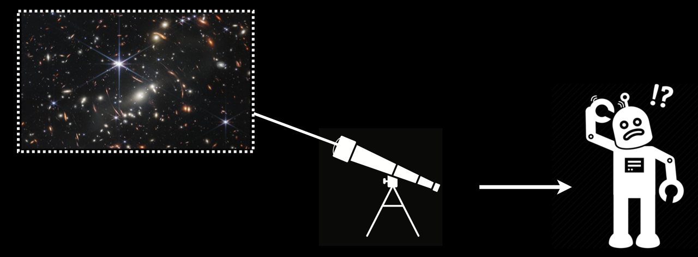
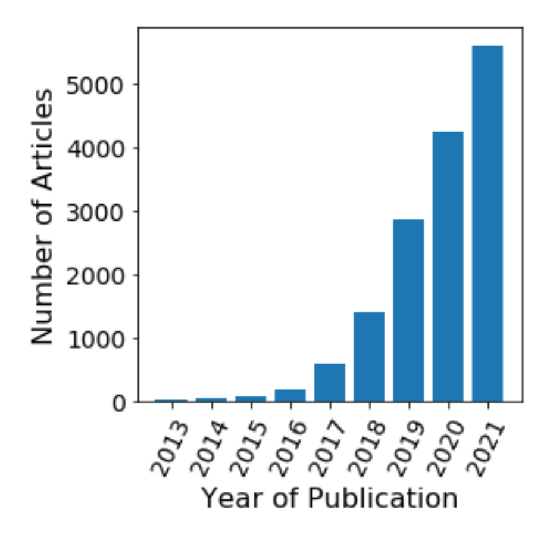
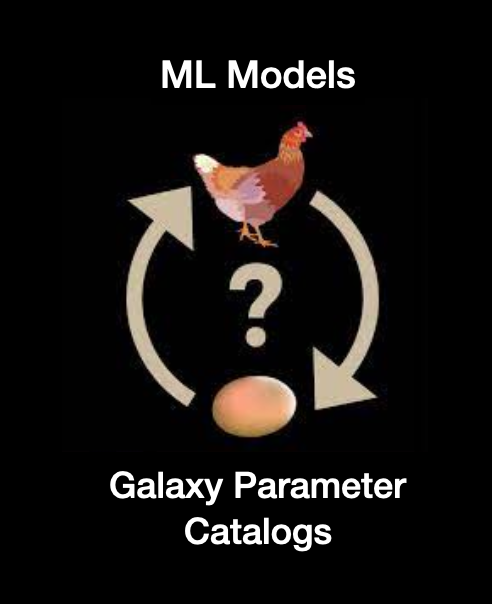
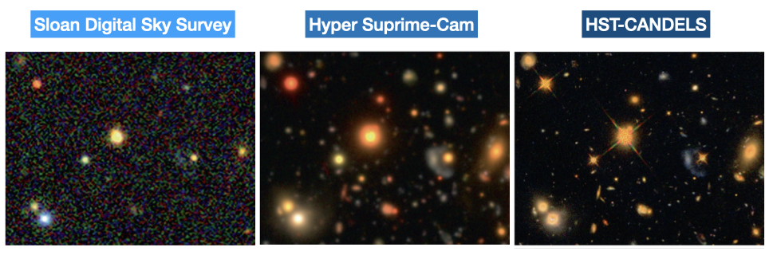
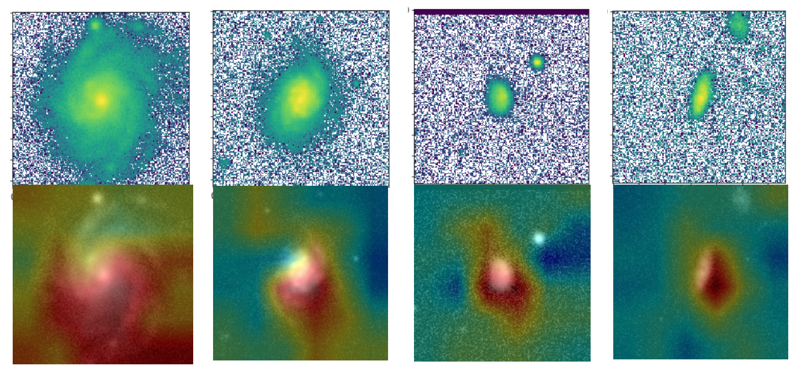
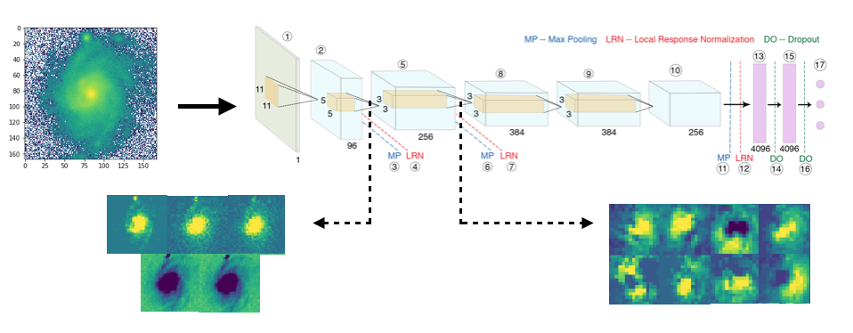
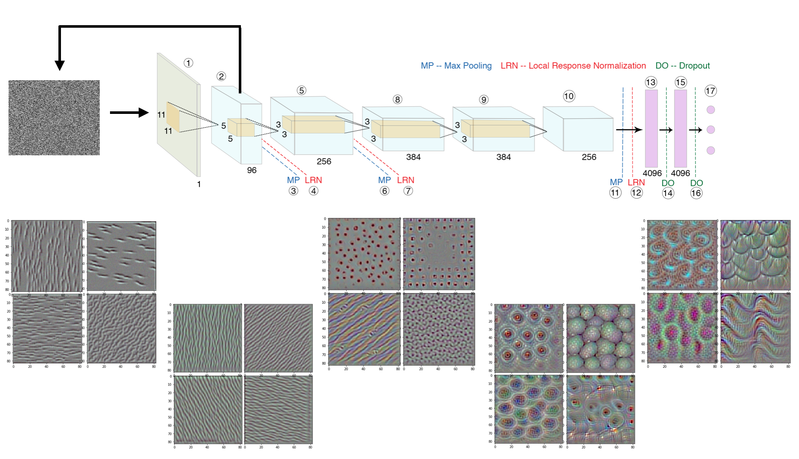

Stress-Testing Machine Learning in Astronomy
Can we harness machine learning properly to accelerate astronomy for the next decade?


However, despite all this work, a few particular challenges have remained, which are crucial to address in order to harness ML fully for the next generation of surveys (like Rubin, Roman, and Euclid). I have focused a part of my research in addressing these challenges:-
- How stable are predictions to rotational transformations?
- Can we train ML models without gigantic real datasets and still obtain good results on real data?
- Can the same algorithms be applied to data over a range of redshifts and form different surveys?
- Can we interpret/investigate the decision making process of our algorithms?
- Stability Under Rotations
- Training with Minimal Real Data
- Applicability Across Surveys
- AstroML Interpretability
Prediction Stability Against Rotational Transformations

Although Convolutional Neural Networks (CNNs) learn to recognize features that are invariant under translation -- the learned features are typically not rotationally invariant. However, this is a problem if CNNs are to be used in astronomy -- especially, for determining the morphology of galaxies. A CNN should be able to identify the same galaxy at two different orientations and return the same values. But is this true? To what level are the predictions stable?
The above video shows the stability of predictions by GaMPEN (Galaxy Morphology Posterior Estimation Network) when an input galaxy from the Hyper Suprime-Cam Wide survey is fed into the framework and slowly rotated. GaMPEN's predictions of all three output parameters -- bulge-to-total light ratio ($L_B/L_T$), effective radius ($R_e$), and flux -- are stable against rotations.The modes of the predicted values deviate by $\lesssim 5\%$. This importantly shows to what level the predictions are stable against rotations.
But what do we do to make this happen? Our approach to do this two fold:-
- We have simulated galaxies with the same structural parameters, but different orientations in our training dataset.
- We augment the number of real galaxies in our dataset by applying different random rotational transformations on the input data during training.
Training ML Algorithms Without Vast Amounts of Real Data

In order to address this, we have used a two-fold strategy:-
- Train all the layers in a CNN using semi-realistic simulations.
- Fine-tune the entire network or only the last few layers using a small amount of hand-annotated real images.
This two step approach has allowed to obtain excellent results for both classification as well as parameter/posterior estimation problems using GaMorNet and GaMPEN. Using this approach we have classified millions of galaxies across SDSS, CANDELS, and HSC. The above approach has allowed us to reduce the amount of real data needed for training by 80-90%
Applicability Across Surveys/Redshfits

One of my pushes has been to develop and test the applicability of models of the same underlying architecture across data of a wide variety of imaging qualities. In our papers we have successfully demonstrated the applicability of our algorithms across datasets of different depths, and pixel scales at different redshfits as outlined below. The two step of approach of first training on simulations and then fine-tuning using real data has enabled us to achieve this.
| ML Tool | SDSS | HSC | HST Legacy Fields |
|---|---|---|---|
| GaMorNet | Done | Done | Done |
| GaMPEN | Done | In Progress |
AstroML Interpretability -- Investigating ML decision making
It is often said that deep-learning models are "black-boxes" learning features that are difficult to understand. Although this might be true for certain types of deep-learning models, it's definitely not true for CNNs. The representations that are learned by CNNs are highly amenable to visualization, primarily because they are representations of visual concepts. Since mid 2010s, many techniques have been developed for visualizing and interpreting these representations. We have used these techniques in order to have a better understanding of the decision making process of our algorithms.
Class Activation Mapping

Visualizing Intermediate Activations

From the image shown above it is clear, that GaMorNet first almost perfectly separates the galaxy from the background and then, after that, focuses on subparts of the galaxy in question.
Visualizing Filter Patterns

We apply this technique to GaMorNet and the different patters that the filters are most responsive to are shown at different depths within the network (the leftmost set of images is from the shallowest layer; and the rightmost set of images is from the deepest layer). As is clear from these images -- shallower layers in the network detect simple features in the input image such as edges and lines. As the network gets progressively deeper, the network deals with higher level more complicated features. As can be seen from the second-from-the-eight image, after detecting lines edges, GaMorNet starts to focus on elliptical/circular patters -- galaxies! And in the last set of images, it can be seen that GaMorNet is looking for sub-features within galaxies, such as spiral arms! The fact that it's only the deeper layers which learn the most complicated features, is what allows us to achieve good performance by fine-tuning only the last few layers of our CNNs.